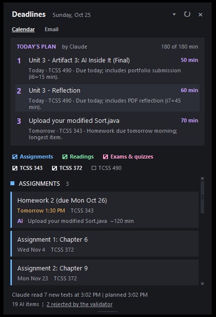
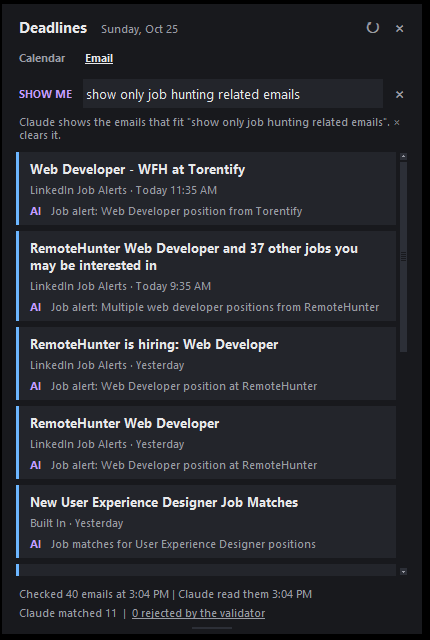

Artifact 03
Deadline Widget
A small desktop window that lists my Canvas due dates and readings, plans what to work on today, and filters my Gmail inbox by a rule I type in plain words.
Reflection
For "AI Inside It," Claude does real work every time the widget refreshes. A Python
pipeline runs Claude Code headless (claude -p), so it needs no paid API key, and
gives it three narrow jobs: pull tasks and due dates out of messy course pages, pick up to
three things to do today, and choose the emails that fit my rule. Plain code fetches the
data, runs Claude with no tools, and checks every answer before it is shown. Those checks
caught real mistakes, like a plan that asked for 205 minutes when only 180 were available.
The README spells out what the model does and what the code checks, and LOG.md records how
the plan changed along the way. The biggest lesson was to keep the model's part small, so
when something went wrong I could tell whether the model or my code was at fault.

Building in Python with Claude
I had barely used Python before this project, so Claude wrote most of the code while I made
the design calls: what the model should do, what plain code should check, and how the
window should behave. I learned the language by reading what it wrote, including virtual
environments, Tkinter for the window and unittest for the tests. The hardest problems were
not the language itself but my machine: Python was installed without Tkinter, and the
desktop shortcut timed out on Gmail until we found that pythonw could not
connect over IPv6. Working this way showed me that I can build something useful in an
unfamiliar language, as long as I test each step and understand why it works.
